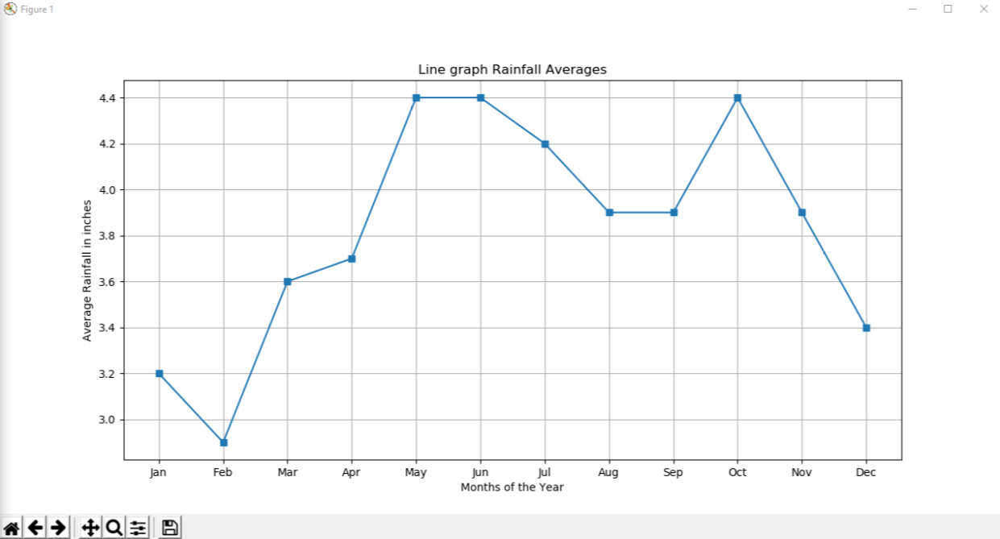

Plotting monthly rainfall averages
This project was my final project for my python course. The program was to take in a user input of average rainfall by month and then find the highest and lowest rainfall months as well as find the total rain fall and average total rainfall. Lastly I was to plot a graph of rainfall averages by month. I made use of Python and the MatPlot Library to accomplish this goal. To get the user input I created a loop that takes the index of the monthly rain list and iterates through the months till the loop reaches its end. Using Pythons built in min and max functions made finding the highest and lowest rainfall months easy. Then the total rain fall is the sum of all rainfall entered using the sum function. Lastly the rainfall average is total rain fall divided over the number of months.
Plotting the average rainfall was easy with MatPlot Library. I passed the Months and the Monthly Rainfall to my Rainfall Plotting function. I then used a map to return the results of my list and tuple allowing me to plot my results using the MatPlot Library plotting function. 